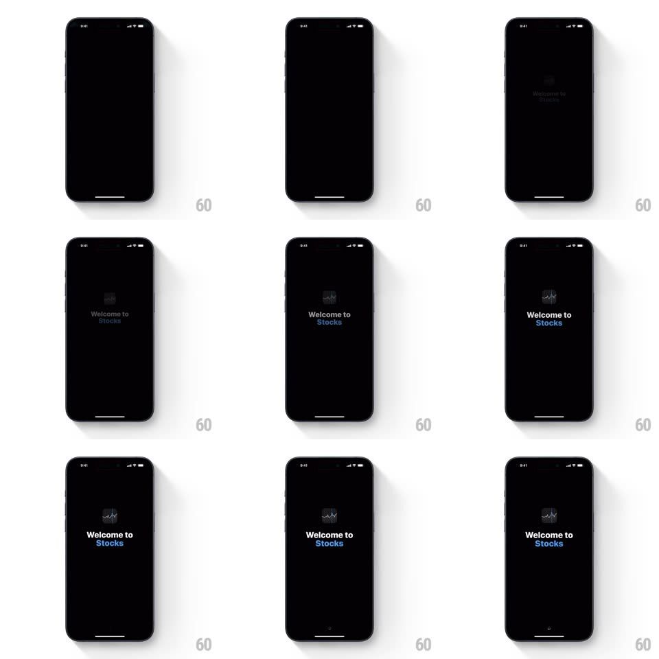

Media
Frame-by-frame

Rebuild this interaction 1:1: the Apple Stocks splash-to-list transition - a black splash with the Stocks icon and "Welcome to Stocks" fades and zooms seamlessly into the main stock list interface.

Rebuild this interaction 1:1: the Apple Stocks splash-to-list transition - a black splash with the Stocks icon and "Welcome to Stocks" fades and zooms seamlessly into the main stock list interface.
## Integration
Integration: stack-agnostic spec - springs given as stiffness/damping, timed motions as duration + curve; map every value to your framework and animation library of choice.
## Scene
Black splash: the Stocks glyph (a small blue sparkline chart in a rounded square) over "Welcome to Stocks" ("Stocks" in blue). Destination: the dark Stocks list.
## Motion spec
Pattern: splash zoom-fade handoff.
- The splash holds ~600ms, then the icon and text begin a slow zoom-out (scale 1 -> 0.96, 800ms, ease-in-out) while fading (opacity 1 -> 0 over the same window).
- The main list fades in beneath (400ms, overlapping the splash fade by ~200ms) with no motion of its own - a clean crossfade.
- The transition is continuous: black background throughout, no white flash.
## Calibration
- The splash's only elements are icon + two-line title; nothing else appears or moves.
- Total handoff ~1s; the list must be fully interactive the moment the fade completes.
## Reduced motion
Simple crossfade (200ms), no zoom.
## Don't miss
- "Welcome to" is white, "Stocks" is blue - the color split is part of the brand mark.
- The icon is a sparkline chart, not the letter S.